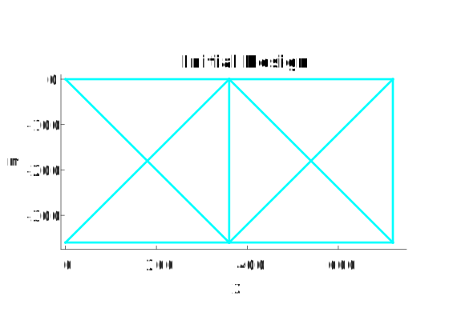
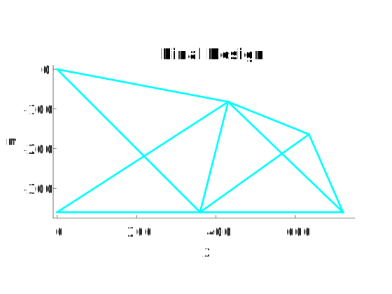

The ten bar truss model was developed by Venkayya for:
Venkayya, V. B. (1971). "Design of Optimum Structures," Computers & Structures, 1(1), 265-309.
Example CoFE input files for this page are provided here:
NASTRAN_CoFE/CoFE_examples/o1s_tenBarTrussShapeOpt/
The minimum weight sizing problem with stress constraints described here was modified so the x and z positions of top right and top middle nodes were design variables.
The tenBar_Opt.m script will execute the optimization and display the initial and final design geometries.
 